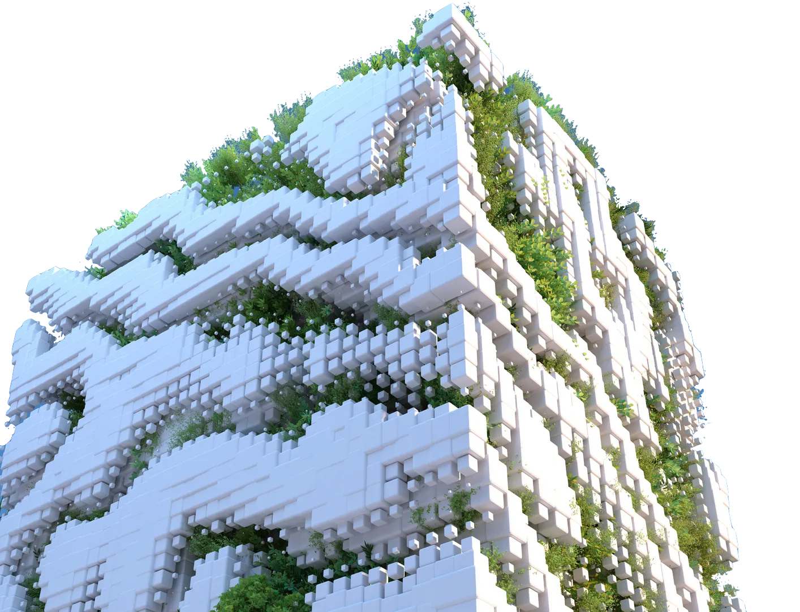

Materiales reciclados
14,920 kg
The Blue Studio reutiliza materiales reciclados en cada proyecto, dándoles una segunda vida sin renunciar al diseño ni a la resistencia que exige cada construcción.

Casa Esencia es nuestro proyecto más significativo, ya que es construida con puros materiales reciclados
En este proyecto participaron muchas personas del equipo, y estas son las cifras que dejó:
1,200 kg de plásticos reciclados
–30 toneladas de CO2
+200 árboles plantados